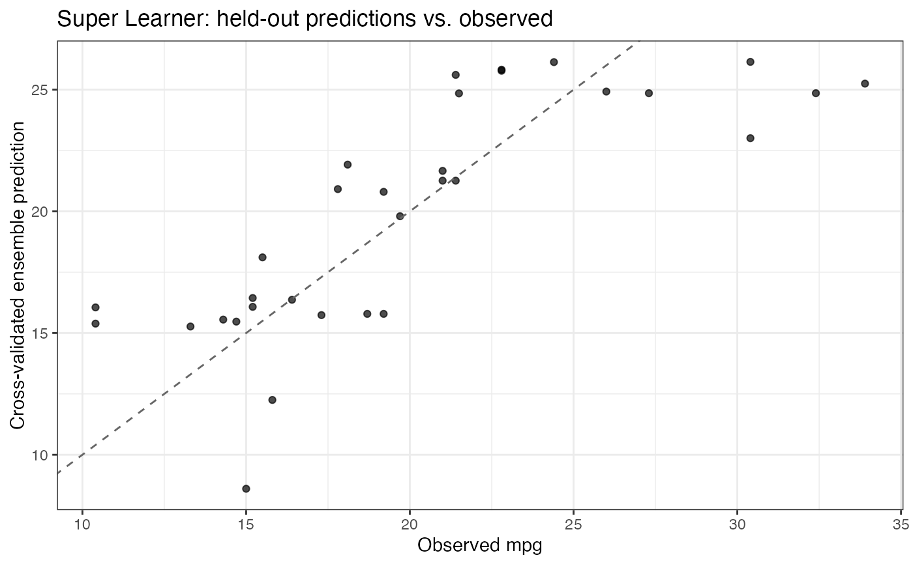

Two plot types are provided:
type = "comparison"(default)For each candidate learner and for the weighted super learner ensemble: bars show the mean cross-validated held-out loss, open circles show each fold's held-out loss, and point-ranges show \(\pm 1\) standard deviation across folds. This automates the figure shown in the package README, with the ensemble added as its own row. Learners are ordered best (lowest loss) at top.
type = "fitted"Cross-validated ensemble predictions on the held-out folds against the observed outcomes, with the identity line for reference. Each prediction comes from learners trained without that observation. Not defined for
outcome_type = "density"or"multiclass".
The loss is chosen by outcome_type: mean squared error for
continuous outcomes and negative log loss otherwise.
Requires the ggplot2 package (listed in Suggests).
Arguments
- x
An object of class
nadir_sl_modelas returned bysuper_learner().- type
One of
"comparison"or"fitted".- ...
Ignored; included for compatibility with the generic.
Examples
if (requireNamespace("ggplot2", quietly = TRUE)) {
sl_model <- super_learner(
data = mtcars,
formula = mpg ~ cyl + hp,
learners = list(mean = lnr_mean, lm = lnr_lm)
)
plot(sl_model) # learner comparison
plot(sl_model, type = "fitted") # observed vs. CV ensemble predictions
}
